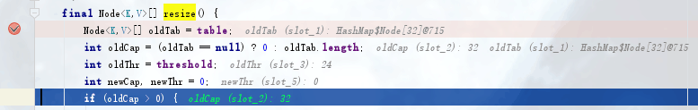

HashMap是Java程序员使用频率最高的用于映射(键值对)处理的数据类型。随着JDK（Java Developmet Kit）版本的更新，JDK1.8对HashMap底层的实现进行了优化，例如引入红黑树的数据结构和扩容的优化等。
本章结合源码，深入分析HashMap的机制。
在上一章我们从Hash开始简单介绍了一下HashMap，接下来让我们从源码分析HashMap。
基本属性分析
首先，我们结合源码来看一下HashMap中的几个属性。1
2
3
4
5
6
7
8
9
10
11
12
13
14
15
16
17
18
19
20
21
22
23
24
25
26
27
28
29
30
31
32
33
34
35
36
37
38
39
40
41
42
43
44
45
46
47
48
49
50
51
52
53
54/* ---------------- Fields -------------- */
/**
* The table, initialized on first use, and resized as
* necessary. When allocated, length is always a power of two.
* (We also tolerate length zero in some operations to allow
* bootstrapping mechanics that are currently not needed.)
* 这个上一章有介绍。
*/
transient Node<K,V>[] table;
/**
* Holds cached entrySet(). Note that AbstractMap fields are used
* for keySet() and values().
*/
transient Set<Map.Entry<K,V>> entrySet;
/**
* The number of key-value mappings contained in this map.
* size就是HashMap中实际存在的键值对个数。
*/
transient int size;
/**
* The number of times this HashMap has been structurally modified
* Structural modifications are those that change the number of mappings in
* the HashMap or otherwise modify its internal structure (e.g.,
* rehash). This field is used to make iterators on Collection-views of
* the HashMap fail-fast. (See ConcurrentModificationException).
* 主要用来记录HashMap内部结构发生变化的次数，主要用于迭代的快速失败。强调一点，内部结构发生变化指的是结构发生变化，
* 例如put新键值对，但是某个key对应的value值被覆盖不属于结构变化。
*/
transient int modCount;
/**
* The next size value at which to resize (capacity * load factor).
* 所能容纳的key-value对极限，threshold = length * Load factor。
* @serial
*/
// (The javadoc description is true upon serialization.
// Additionally, if the table array has not been allocated, this
// field holds the initial array capacity, or zero signifying
// DEFAULT_INITIAL_CAPACITY.)
int threshold;
/**
* The load factor for the hash table.
* 负载因子，和threshold字段一起说，在数组定义好长度之后，负载因子越大，所能容纳的键值对个数越多。
* 结合负载因子的定义公式可知，threshold就是在此Load factor和length(数组长度)对应下允许的最大元素数目，超过这个数目就重新resize(扩容)，扩容后的HashMap容量是之前容量的两倍。
* 默认的负载因子0.75是对空间和时间效率的一个平衡选择，建议大家不要修改，除非在时间和空间比较特殊的情况下，如果内存空间很多而又对时间效率要求很高，可以降低负载因子Load factor的值；
* 相反，如果内存空间紧张而对时间效率要求不高，可以增加负载因子loadFactor的值，这个值可以大于1。
* @serial
*/
final float loadFactor;
接下来我们来看一下HashMap的几个final字段。1
2
3
4
5
6
7
8
9
10
11
12
13
14
15
16
17
18
19
20
21
22
23
24
25
26
27
28
29
30
31
32
33
34
35
36
37
38
39
40
41
42
43
44
45
46
47
48
49/**
* The default initial capacity - MUST be a power of two.
* 初始容量，也即是默认会创建16个
* 需要注意的是，这里的大小指的是桶数组table的大小，其长度必须为2的整数幂。
*/
static final int DEFAULT_INITIAL_CAPACITY = 1 << 4; // aka 16
/**
* The maximum capacity, used if a higher value is implicitly specified
* by either of the constructors with arguments.
* MUST be a power of two <= 1<<30.
* 哈希表最大容量，一般情况下只要内存够用，哈希表不会出现问题。
*/
static final int MAXIMUM_CAPACITY = 1 << 30;
/**
* The load factor used when none specified in constructor.
* 默认负载因子大小为0.75f。
* 因此初始情况下，当键值对的数量大于 16 * 0.75 = 12 时，就会触发扩容。
*/
static final float DEFAULT_LOAD_FACTOR = 0.75f;
/**
* The bin count threshold for using a tree rather than list for a
* bin. Bins are converted to trees when adding an element to a
* bin with at least this many nodes. The value must be greater
* than 2 and should be at least 8 to mesh with assumptions in
* tree removal about conversion back to plain bins upon
* shrinkage.
* 如果哈希函数不合理，即使扩容也无法减少箱子中链表的长度，因此 Java 的处理方案是当链表太长时，转换成红黑树。这个值表示当某个箱子中，链表长度大于 8 时，有可能会转化成树。
*/
static final int TREEIFY_THRESHOLD = 8;
/**
* The bin count threshold for untreeifying a (split) bin during a
* resize operation. Should be less than TREEIFY_THRESHOLD, and at
* most 6 to mesh with shrinkage detection under removal.
* 在哈希表扩容时，如果发现链表长度小于 6，则会由树重新退化为链表。
*/
static final int UNTREEIFY_THRESHOLD = 6;
/**
* The smallest table capacity for which bins may be treeified.
* (Otherwise the table is resized if too many nodes in a bin.)
* Should be at least 4 * TREEIFY_THRESHOLD to avoid conflicts
* between resizing and treeification thresholds.
* 在转变成树之前，还会有一次判断，只有键值对数量大于 64 才会发生转换。这是为了避免在哈希表建立初期，多个键值对恰好被放入了同一个链表中而导致不必要的转化。
*/
static final int MIN_TREEIFY_CAPACITY = 64;
有几个问题需要探讨一下：
一、为什么桶的大小必须是2的整数幂，且是16？参考自美团技术团队
这是一种非常规的设计，常规的设计是把桶的大小设计为素数。相对来说素数导致冲突的概率要小于合数，具体证明可以参考Hashtable初始化桶大小为11，就是桶大小设计为素数的应用（Hashtable扩容后不能保证还是素数）。HashMap采用这种非常规设计，主要是为了在取模和扩容时做优化，同时为了减少冲突，HashMap定位哈希桶索引位置时，也加入了高位参与运算的过程。之后会详细解释。
二、为什么负载因子的初始大小为0.75f？参考博客园
学过概率论的读者也许知道，理想状态下哈希表的每个箱子中，元素的数量遵守泊松分布:

当负载因子为 0.75 时，上述公式中 λ 约等于 0.5，因此箱子中元素个数和概率的关系如下:
| 数量 | 概率 |
|---|---|
| 0 | 0.60653066 |
| 1 | 0.30326533 |
| 2 | 0.07581633 |
| 3 | 0.01263606 |
| 4 | 0.00157952 |
| 5 | 0.00015795 |
| 6 | 0.00001316 |
| 7 | 0.00000094 |
| 8 | 0.00000006 |
这就是为什么箱子中链表长度超过 8 以后要变成红黑树，因为在正常情况下出现这种现象的几率小到忽略不计。一旦出现，几乎可以认为是哈希函数设计有问题导致的。
Java 对哈希表的设计一定程度上避免了不恰当的哈希函数导致的性能问题，每一个箱子中的链表可以与红黑树切换。
三、然后辟个谣，之前搜索HashMap相关知识的时候，发现有人说HashMap初始大小为16没错，但是第一次扩容的时候会直接扩容到64，这个我自己跑了一下，发现是谣言！第一次扩容还是会扩容到32的，如下图。

实现
Hash

之前我们有说HashMap是由数组加链表再加树组成的数据结构，table数组中每个元素存储的是一个链表的头指针，由hash函数来计算每个节点应在哪个位置，一般是采用index = hash(value)%length计算出元素应该放到对应下标的table数组中的位置。若hash相同则拉链，树。
我们知道HashMap寻找一个元素的时间复杂度是O(1)的，他是如何在在“线性数组”的基础上如何做到随机存储呢？重点是确定键值对的存储位置，这里是希望HashMap里面的元素尽量离散分布，使每个位置上的元素只有一个。当使用hash算法求出这个位置时，马上就可以获取对应位置的值，而不用取遍历链表。也与hash方法的离散性能密切相关。
我们一步步的进行，首先从put开始。1
2
3
4
5
6
7
8
9
10
11
12
13
14
15/**
* Associates the specified value with the specified key in this map.
* If the map previously contained a mapping for the key, the old
* value is replaced.
*
* @param key key with which the specified value is to be associated
* @param value value to be associated with the specified key
* @return the previous value associated with <tt>key</tt>, or
* <tt>null</tt> if there was no mapping for <tt>key</tt>.
* (A <tt>null</tt> return can also indicate that the map
* previously associated <tt>null</tt> with <tt>key</tt>.)
*/
public V put(K key, V value) {
return putVal(hash(key), key, value, false, true);
}
这里是直接调用了putval函数，传入了key的hash值。
我们先看一下hash()这个函数是怎么写的1
2
3
4 static final int hash(Object key) {
int h;
return (key == null) ? 0 : (h = key.hashCode()) ^ (h >>> 16);
}
- 第一步，h = key.hashCode(),取hashCode值
- 第二步，h^(h>>>16)，高位参与运算
- 其实还有第三步，只不过JDK1.8后没有单独把这个函数列出来了。
1 | static int indexFor(int h, int length) { |
这里注意key.hashCode()这个方法，这个是Object自带的，会根据传入的类型进行不同的策略，比如如果put(1,1);这里的key为1，是Integer类型的，所以会调用Integer重写的HashCode方法。
简单说起来，这里的Hash算法本质上就是三步：取key的hashCode的值、高位运算、取模运算
对于任意给定的对象，只要它的hashCode()返回值相同，那么程序调用方法一所计算得到的Hash码值总是相同的。我们首先想到的就是把hash值对数组长度取模运算，这样一来，元素的分布相对来说是比较均匀的。但是，模运算的消耗还是比较大的，在HashMap中是这样做的：调用方法二来计算该对象应该保存在table数组的哪个索引处。
这个方法非常巧妙，它通过h & (table.length -1)来得到该对象的保存位，而HashMap底层数组的长度总是2的n次方，这是HashMap在速度上的优化。当length总是2的n次方时，h& (length-1)运算等价于对length取模，也就是h%length，但是&比%具有更高的效率。
在JDK1.8的实现中，优化了高位运算的算法，通过hashCode()的高16位异或低16位实现的：(h = k.hashCode()) ^ (h >>> 16)，主要是从速度、功效、质量来考虑的，这么做可以在table数组的length比较小的时候，也能保证考虑到高低Bit都参与到Hash的计算中，同时不会有太大的开销。
下面举例说明下，n为table的长度。
关于高位运算这点，自己不是很清楚，看了很多博客也不是很清晰，都说从各方面考虑，高位与低位同时参与hash，使结果更为分散，减少Hash冲突，而这样的位运算对于机器来说是很快的。
Put
接下来继续从put说下去，先看一下putval的源码：1
2
3
4
5
6
7
8
9
10
11
12
13
14
15
16
17
18
19
20
21
22
23
24
25
26
27
28
29
30
31
32
33
34
35
36
37
38
39
40
41
42
43
44
45
46
47
48
49
50
51
52
53
54
55
56
57
58
59
60/**
* Implements Map.put and related methods
*
* @param hash hash for key
* @param key the key
* @param value the value to put
* @param onlyIfAbsent if true, don't change existing value
* @param evict if false, the table is in creation mode.
* @return previous value, or null if none
*/
final V putVal(int hash, K key, V value, boolean onlyIfAbsent,
boolean evict) {
Node<K,V>[] tab; Node<K,V> p; int n, i;
//1：tab为空就创建
if ((tab = table) == null || (n = tab.length) == 0)
n = (tab = resize()).length;
//2：计算index，并作null处理
if ((p = tab[i = (n - 1) & hash]) == null)
tab[i] = newNode(hash, key, value, null);
else {
Node<K,V> e; K k;
//3：节点key存在，直接覆盖value
if (p.hash == hash &&
((k = p.key) == key || (key != null && key.equals(k))))
e = p;
//4：判断该链是否位红黑树
else if (p instanceof TreeNode)
e = ((TreeNode<K,V>)p).putTreeVal(this, tab, hash, key, value);
//5：该链为链表
else {
for (int binCount = 0; ; ++binCount) {
if ((e = p.next) == null) {
p.next = newNode(hash, key, value, null);
//链表长度大于8则树化
if (binCount >= TREEIFY_THRESHOLD - 1) // -1 for 1st
treeifyBin(tab, hash);
break;
}
//key已存在则直接覆盖
if (e.hash == hash &&
((k = e.key) == key || (key != null && key.equals(k))))
break;
p = e;
}
}
if (e != null) { // existing mapping for key
V oldValue = e.value;
if (!onlyIfAbsent || oldValue == null)
e.value = value;
afterNodeAccess(e);
return oldValue;
}
}
++modCount;
//6： 超过最大容量就扩容
if (++size > threshold)
resize();
afterNodeInsertion(evict);
return null;
}
美团技术团队的博客好棒啊，很清晰，再盗一波图。HashMap的put方法执行过程可以通过下图来理解.
判断键值对数组table[i]是否为空或为null，否则执行resize()进行扩容；
根据键值key计算hash值得到插入的数组索引i，如果table[i]==null，直接新建节点添加，转向
6，如果table[i]不为空，转向3；判断table[i]的首个元素是否和key一样，如果相同直接覆盖value，否则转向
4，这里的相同指的是hashCode以及equals；判断table[i] 是否为treeNode，即table[i] 是否是红黑树，如果是红黑树，则直接在树中插入键值对，否则转向
5；遍历table[i]，判断链表长度是否大于8，大于8的话把链表转换为红黑树，在红黑树中执行插入操作，否则进行链表的插入操作；遍历过程中若发现key已经存在直接覆盖value即可；
插入成功后，判断实际存在的键值对数量size是否超多了最大容量threshold，如果超过，进行扩容。
扩容机制
之前我们介绍了说，当size超过treshold时，就扩容，扩容（resize）就是table数组长度扩大两倍。
这里我看了网上好多博客，很多都引用了美团，还是美团这里讲的最清晰。
我们分析下resize的源码，鉴于JDK1.8融入了红黑树，较复杂，为了便于理解我们仍然使用JDK1.7的代码，好理解一些，本质上区别不大，具体区别后文再说。1
2
3
4
5
6
7
8
9
10
11
12
13void resize(int newCapacity) { //传入新的容量
Entry[] oldTable = table; //引用扩容前的Entry数组
int oldCapacity = oldTable.length;
if (oldCapacity == MAXIMUM_CAPACITY) { //扩容前的数组大小如果已经达到最大(2^30)了
threshold = Integer.MAX_VALUE; //修改阈值为int的最大值(2^31-1)，这样以后就不会扩容了
return;
}
Entry[] newTable = new Entry[newCapacity]; //初始化一个新的Entry数组
transfer(newTable); //！！将数据转移到新的Entry数组里
table = newTable; //HashMap的table属性引用新的Entry数组
threshold = (int) (newCapacity * loadFactor);//修改阈值
}
这里就是使用一个容量更大的数组来代替已有的容量小的数组，transfer()方法将原有Entry数组的元素拷贝到新的Entry数组里。1
2
3
4
5
6
7
8
9
10
11
12
13
14
15
16
17void transfer(Entry[] newTable) {
Entry[] src = table; //src引用了旧的Entry数组
int newCapacity = newTable.length;
for (int j = 0; j < src.length; j++) { //遍历旧的Entry数组
Entry<K, V> e = src[j]; //取得旧Entry数组的每个元素
if (e != null) {
src[j] = null;//释放旧Entry数组的对象引用（for循环后，旧的Entry数组不再引用任何对象）
do {
Entry<K, V> next = e.next;
int i = indexFor(e.hash, newCapacity); //！！重新计算每个元素在数组中的位置
e.next = newTable[i]; //标记[1]
newTable[i] = e; //将元素放在数组上
e = next; //访问下一个Entry链上的元素
} while (e != null);
}
}
}
newTable[i]的引用赋给了e.next，也就是使用了单链表的头插入方式，同一位置上新元素总会被放在链表的头部位置；这样先放在一个索引上的元素终会被放到Entry链的尾部(如果发生了hash冲突的话），这一点和Jdk1.8有区别，下文详解。在旧数组中同一条Entry链上的元素，通过重新计算索引位置后，有可能被放到了新数组的不同位置上。
下面举个例子说明下扩容过程。假设了我们的hash算法就是简单的用key mod 一下表的大小（也就是数组的长度）。其中的哈希桶数组table的size=2， 所以key = 3、7、5，put顺序依次为 5、7、3。在mod 2以后都冲突在table[1]这里了。这里假设负载因子 loadFactor=1，即当键值对的实际大小size 大于 table的实际大小时进行扩容。接下来的三个步骤是哈希桶数组 resize成4，然后所有的Node重新rehash的过程。
下面我们讲解下JDK1.8做了哪些优化。经过观测可以发现，我们使用的是2次幂的扩展(指长度扩为原来2倍)，所以，元素的位置要么是在原位置，要么是在原位置再移动2次幂的位置。看下图可以明白这句话的意思，n为table的长度，图（a）表示扩容前的key1和key2两种key确定索引位置的示例，图（b）表示扩容后key1和key2两种key确定索引位置的示例，其中hash1是key1对应的哈希与高位运算结果。
元素在重新计算hash之后，因为n变为2倍，那么n-1的mask范围在高位多1bit(红色)，因此新的index就会发生这样的变化：
因此，我们在扩充HashMap的时候，不需要像JDK1.7的实现那样重新计算hash，只需要看看原来的hash值新增的那个bit是1还是0就好了，是0的话索引没变，是1的话索引变成“原索引+oldCap”，可以看看下图为16扩充为32的resize示意图：
这个设计确实非常的巧妙，既省去了重新计算hash值的时间，而且同时，由于新增的1bit是0还是1可以认为是随机的，因此resize的过程，均匀的把之前的冲突的节点分散到新的bucket了。这一块就是JDK1.8新增的优化点。有一点注意区别，JDK1.7中rehash的时候，旧链表迁移新链表的时候，如果在新表的数组索引位置相同，则链表元素会倒置，但是从上图可以看出，JDK1.8不会倒置。有兴趣的同学可以研究下JDK1.8的resize源码，写的很赞，如下:1
2
3
4
5
6
7
8
9
10
11
12
13
14
15
16
17
18
19
20
21
22
23
24
25
26
27
28
29
30
31
32
33
34
35
36
37
38
39
40
41
42
43
44
45
46
47
48
49
50
51
52
53
54
55
56
57
58
59
60
61
62
63
64
65
66
67
68
69
70
71
72
73
74
75
76
77
78
79
80
81
82
83
84
85
86
87
88
89
90
91
/**
* Initializes or doubles table size. If null, allocates in
* accord with initial capacity target held in field threshold.
* Otherwise, because we are using power-of-two expansion, the
* elements from each bin must either stay at same index, or move
* with a power of two offset in the new table.
*
* @return the table
*/
final Node<K,V>[] resize() {
Node<K,V>[] oldTab = table;
int oldCap = (oldTab == null) ? 0 : oldTab.length;
int oldThr = threshold;
int newCap, newThr = 0;
if (oldCap > 0) {
// 超过最大值就不再扩充了，就只好随你碰撞去吧
if (oldCap >= MAXIMUM_CAPACITY) {
threshold = Integer.MAX_VALUE;
return oldTab;
}
// 没超过最大值，就扩充为原来的2倍,这里位运算，左移一位
else if ((newCap = oldCap << 1) < MAXIMUM_CAPACITY &&
oldCap >= DEFAULT_INITIAL_CAPACITY)
newThr = oldThr << 1; // double threshold
}
else if (oldThr > 0) // initial capacity was placed in threshold
newCap = oldThr;
else { // zero initial threshold signifies using defaults
newCap = DEFAULT_INITIAL_CAPACITY;
newThr = (int)(DEFAULT_LOAD_FACTOR * DEFAULT_INITIAL_CAPACITY);
}
// 计算新的resize上限
if (newThr == 0) {
float ft = (float)newCap * loadFactor;
newThr = (newCap < MAXIMUM_CAPACITY && ft < (float)MAXIMUM_CAPACITY ?
(int)ft : Integer.MAX_VALUE);
}
threshold = newThr;
({"rawtypes","unchecked"})
Node<K,V>[] newTab = (Node<K,V>[])new Node[newCap];
table = newTab;
if (oldTab != null) {
// 把每个bucket都移动到新的buckets中
for (int j = 0; j < oldCap; ++j) {
Node<K,V> e;
if ((e = oldTab[j]) != null) {
oldTab[j] = null;
if (e.next == null)
newTab[e.hash & (newCap - 1)] = e;
else if (e instanceof TreeNode)
((TreeNode<K,V>)e).split(this, newTab, j, oldCap);
else { // preserve order // 链表优化重hash的代码块
Node<K,V> loHead = null, loTail = null;
Node<K,V> hiHead = null, hiTail = null;
Node<K,V> next;
do {
next = e.next;
// 原索引
if ((e.hash & oldCap) == 0) {
if (loTail == null)
loHead = e;
else
loTail.next = e;
loTail = e;
}
// 原索引+oldCap
else {
if (hiTail == null)
hiHead = e;
else
hiTail.next = e;
hiTail = e;
}
} while ((e = next) != null);
// 原索引放到bucket里
if (loTail != null) {
loTail.next = null;
newTab[j] = loHead;
}
// 原索引+oldCap放到bucket里
if (hiTail != null) {
hiTail.next = null;
newTab[j + oldCap] = hiHead;
}
}
}
}
}
return newTab;
}
线程安全性
在多线程使用场景中，应该尽量避免使用线程不安全的HashMap，而使用线程安全的ConcurrentHashMap。那么为什么说HashMap是线程不安全的，下面举例子说明在并发的多线程使用场景中使用HashMap可能造成死循环。代码例子如下(便于理解，仍然使用JDK1.7的环境)：1
2
3
4
5
6
7
8
9
10
11
12
13
14
15
16
17
18
19
20public class HashMapInfiniteLoop {
private static HashMap<Integer,String> map = new HashMap<Integer,String>(2，0.75f);
public static void main(String[] args) {
map.put(5， "C");
new Thread("Thread1") {
public void run() {
map.put(7, "B");
System.out.println(map);
};
}.start();
new Thread("Thread2") {
public void run() {
map.put(3, "A);
System.out.println(map);
};
}.start();
}
}
其中，map初始化为一个长度为2的数组，loadFactor=0.75，threshold=2*0.75=1，也就是说当put第二个key的时候，map就需要进行resize。
通过设置断点让线程1和线程2同时debug到transfer方法的首行。注意此时两个线程已经成功添加数据。放开thread1的断点至transfer方法的“Entry next = e.next;” 这一行；然后放开线程2的的断点，让线程2进行resize。结果如下图。
注意，Thread1的 e 指向了key(3)，而next指向了key(7)，其在线程二rehash后，指向了线程二重组后的链表。
线程一被调度回来执行，先是执行 newTalbe[i] = e， 然后是e = next，导致了e指向了key(7)，而下一次循环的next = e.next导致了next指向了key(3)。
e.next = newTable[i] 导致 key(3).next 指向了 key(7)。注意：此时的key(7).next 已经指向了key(3)， 环形链表就这样出现了。
于是，当我们用线程一调用map.get(11)时，悲剧就出现了——Infinite Loop。
结束语
最后我们回过头来再看那个问题，为什么桶的大小必须是2的整数幂，就一目了然了。
不得不感慨一下，设计这个的人，真牛逼！